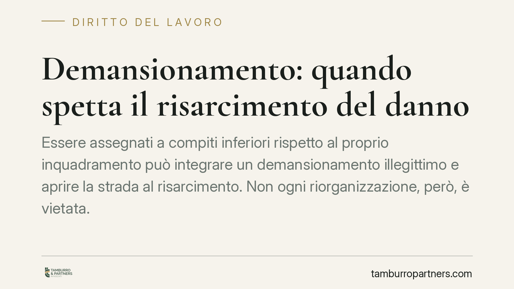

Demansionamento: quando spetta il risarcimento del danno
Essere assegnati a compiti inferiori rispetto al proprio inquadramento può integrare un demansionamento illegittimo e aprire la strada al risarcimento. Non ogni riorganizzazione, però, è vietata. Conta la distinzione tra scelte gestionali legittime e svuotamento delle mansioni, così come la corretta individuazione delle voci di danno e dei termini per agire in giudizio.

Inquadramento normativo
La disciplina di riferimento è l'articolo 2103 del codice civile, come riformato dal D.lgs. 81/2015 (il cosiddetto Jobs Act). La norma consente al datore di lavoro di adibire il dipendente alle mansioni per cui è stato assunto, a quelle riconducibili allo stesso livello e categoria legale di inquadramento, e — entro certi limiti — a mansioni superiori o inferiori nei casi tipizzati (ad esempio in caso di modifica degli assetti organizzativi che incidano sulla posizione del lavoratore, con conservazione del livello e della retribuzione).
Il punto di equilibrio è netto: la riorganizzazione aziendale è legittima quando rispetta questi vincoli; diventa demansionamento illegittimo quando comporta uno svuotamento sostanziale del ruolo, l'assegnazione a compiti dequalificanti o la perdita del bagaglio professionale acquisito. In tema di onere della prova, l'orientamento consolidato — a partire dalle Sezioni Unite della Cassazione, sentenza n. 6572 del 2006 — chiarisce che il lavoratore deve allegare e provare il demansionamento e il danno concreto, potendo il pregiudizio essere dimostrato anche per presunzioni, sulla base di elementi come la durata, la gravità e la natura della dequalificazione.
Le voci di danno: distinzioni necessarie
È un errore ricorrente trattare il danno da demansionamento come una voce unica. In realtà si tratta di pregiudizi concettualmente diversi, che vanno allegati e provati separatamente.
Danno alla professionalità: riguarda l'impoverimento delle competenze e del patrimonio professionale del lavoratore, che non viene più utilizzato o si deteriora nel tempo.
Danno da perdita di chance: attiene alla perdita di concrete possibilità di progressione di carriera o di sviluppo professionale. Non coincide con il danno alla professionalità: qui si valuta la probabilità, apprezzabile e non meramente ipotetica, di un avanzamento sfumato a causa della dequalificazione.
Danno biologico: è il pregiudizio alla salute psico-fisica, che presuppone un accertamento medico-legale. Non è automatico: va dimostrato il nesso causale tra il demansionamento e la lesione, tipicamente tramite perizia.
Danno morale o esistenziale: può ricorrere in presenza di una lesione della dignità personale e della vita di relazione, sempre entro i limiti di risarcibilità del danno non patrimoniale.
Nessuna di queste voci è riconosciuta in via automatica per il solo fatto del demansionamento: ciascuna richiede allegazione e prova, anche presuntiva.
Implicazioni pratiche
Per il lavoratore, la conseguenza è che non basta lamentare l'assegnazione a compiti inferiori: occorre ricostruire con precisione mansioni precedenti e attuali, durata della situazione e ricadute concrete.
Quanto al ripristino delle mansioni, va usata cautela. Il giudice può accertare l'illegittimità della condotta e condannare il datore a reintegrare il dipendente nelle mansioni corrette, ma l'esecuzione in forma specifica di un obbligo di fare infungibile incontra limiti pratici: nella prassi la tutela si concentra spesso sul profilo risarcitorio e, ove possibile, sull'inibitoria della prosecuzione del comportamento illegittimo.
Per l'azienda, il messaggio è simmetrico: la flessibilità organizzativa esiste, ma va gestita documentando le ragioni tecniche, organizzative o produttive e mantenendo livello e retribuzione, così da non trasformare una scelta gestionale legittima in un contenzioso.
Sui termini, l'azione risarcitoria di natura contrattuale è soggetta alla prescrizione ordinaria decennale prevista dall'articolo 2946 del codice civile. Non opera, di regola, un termine di decadenza tipico, salvo ipotesi specifiche legate a distinti profili di impugnazione.
Cosa fare in concreto
- Documentare l'inquadramento contrattuale e le mansioni effettivamente svolte prima e dopo il cambiamento, conservando ordini di servizio, organigrammi e comunicazioni interne.
- Formalizzare per iscritto la contestazione al datore di lavoro, descrivendo in modo puntuale la dequalificazione e chiedendo il ripristino delle mansioni.
- Rivolgersi a un medico in caso di ricadute sulla salute, così da costituire una base documentale utile a un eventuale accertamento medico-legale.
- Raccogliere elementi utili a dimostrare la perdita di occasioni professionali concrete (percorsi di carriera, selezioni interne, incarichi non assegnati).
- Valutare i termini: è opportuno verificare la propria posizione con un legale prima che maturino prescrizioni o eventuali decadenze applicabili al caso concreto.
Disclaimer
Contributo informativo a cura di Tamburro & Partners - Avv. Giuseppe Tamburro. Non costituisce parere legale.
Ogni storia di lavoro ha i suoi tempi.
Se gestisci HR e vuoi un confronto su contenzioso, ispezioni o licenziamenti, scrivi allo studio. Ti rispondiamo entro un giorno lavorativo.